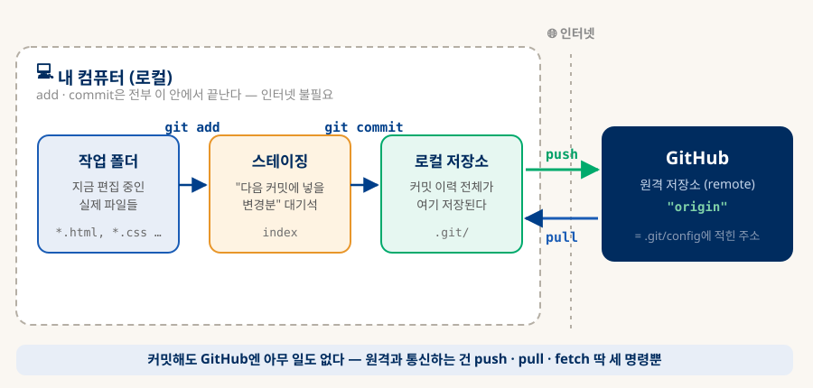
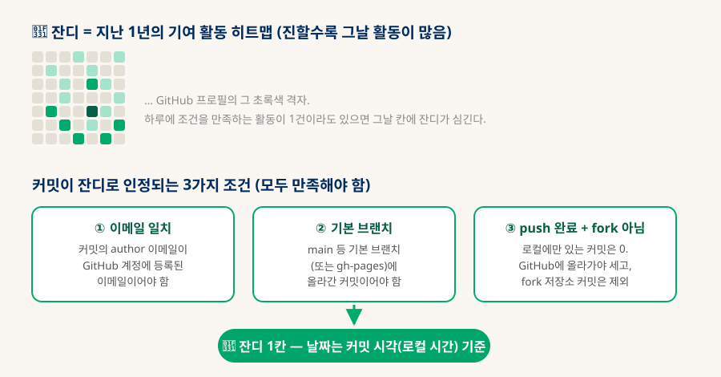

Git & GitHub 정리
로컬 저장소 · 원격 연결 · 그리고 잔디
"커밋은 로컬에서만 하고 있었는데, 이제 이 폴더는 GitHub에 무조건 연결된 건가?" — 이 질문 하나에서 출발해, git과 GitHub의 관계, 원격 연결(remote)의 실체, 매일 쓰는 명령어, 그리고 잔디(contribution graph)가 심기는 정확한 조건까지 한 문서로 정리한다.
0. 한눈에 보기 — git은 도구, GitHub는 서비스
이 구분 하나만 잡으면 나머지는 전부 따라온다
git은 내 컴퓨터에 설치된 버전 관리 도구다. 커밋·이력·브랜치는 전부 프로젝트 폴더 안의 숨겨진 .git/ 폴더에 저장되며, 인터넷 없이 완전하게 동작한다. GitHub는 그 저장소의 사본을 올려두는 웹 서비스다. 백업·다른 기기와의 동기화·공유·정적 호스팅(Pages)을 제공하지만, git 입장에서는 여러 "원격 저장소(remote)" 중 하나일 뿐이다.
(이 폴더가 곧 저장소)
(커밋은 100% 로컬)
push · pull · fetch
git remote remove
1. Git의 공간 구조 — 커밋은 어디까지 가는가
작업 폴더 → 스테이징 → 로컬 저장소, 그리고 인터넷 건너의 원격
git을 쓸 때 파일은 네 공간을 오간다. 앞의 셋은 전부 내 컴퓨터 안이고, 네 번째(원격)로 넘어가는 것은 오직 push뿐이다.

| 공간 | 들어가는 명령 | 무엇이 있는 곳인가 |
|---|---|---|
| 작업 폴더 | (파일 편집) | 지금 보고 편집하는 실제 파일들. git이 변경을 감지하는 대상. |
| 스테이징 | git add | "다음 커밋에 포함할 변경분"의 대기석. 커밋 단위를 다듬는 곳. |
| 로컬 저장소 | git commit | .git/ 안의 커밋 이력. 여기까지가 예전부터 하던 "로컬 git"의 전부다. |
| 원격 (GitHub) | git push | GitHub 서버에 있는 저장소 사본. push한 만큼만 반영된다. |
fetch와 pull은 뭐가 다른가?
git fetch는 원격의 새 커밋을 가져와서 보기만 한다(내 작업 폴더는 그대로). git pull은 fetch + merge, 즉 가져온 커밋을 내 브랜치에 합치는 것까지 한 번에 한다. 일상적으로는 pull이면 충분하고, "다른 PC에서 뭐가 올라왔는지 구경만 하고 싶을 때" fetch를 쓴다.
2. GitHub 연결의 실체 — "무조건 연결"이 아니다
remote는 .git/config에 적힌 주소 몇 줄일 뿐이다
"이 폴더는 이제 GitHub와 무조건 연결된 건가?"에 대한 정확한 답: 연결이라기보다 주소 등록이다. origin이라는 이름으로 GitHub 저장소의 URL이 .git/config 파일에 저장되어 있고, push/pull을 실행할 때만 그 주소로 통신한다. 실제로 이 저장소의 .git/config에는 이렇게 적혀 있다:
# origin이라는 이름의 원격 저장소 주소 [remote "origin"] url = https://github.com/W-Leester/knowledge-db.git fetch = +refs/heads/*:refs/remotes/origin/* # 로컬 main 브랜치가 origin의 main을 "추적"한다는 설정 # → 이 덕분에 그냥 git push / git pull만 쳐도 목적지를 안다 [branch "main"] remote = origin merge = refs/heads/main
A이 연결을 만든 명령 2개
이 저장소가 GitHub와 이어진 것은 딱 두 명령의 결과다 (Phase 0.5에서 실행됨):
# ① "origin"이라는 이름으로 GitHub 주소를 등록 (config에 몇 줄 추가될 뿐) git remote add origin https://github.com/W-Leester/knowledge-db.git # ② 첫 push + -u(--set-upstream): 로컬 main이 origin/main을 추적하도록 설정 # → 이후로는 git push / git pull만 쳐도 됨 git push -u origin main
B끊기 · 재연결 · 확인
| 하고 싶은 것 | 명령 | 결과 |
|---|---|---|
| 현재 연결 확인 | git remote -v | 등록된 원격 이름과 주소 목록. 아무것도 안 나오면 순수 로컬 저장소. |
| 연결 끊기 | git remote remove origin | 주소 등록만 삭제. 커밋 이력·파일은 전부 그대로 — 완전한 로컬 저장소로 복귀. |
| 다시 연결 | git remote add origin <URL> git push -u origin main | 주소 재등록 + 추적 설정. 위 A의 두 명령 그대로. |
| 주소만 변경 | git remote set-url origin <URL> | 저장소 이름 변경·계정 이전 시 주소만 갱신. |
3. 일상 명령어 — 매일 쓰는 것만 추리면 열 개 남짓
하루의 리듬 하나 + 상황별 명령어 사전
A하루의 리듬 (여러 PC를 쓸 때의 표준 사이클)
# ① 시작: 다른 PC에서 올린 커밋을 먼저 받는다 (충돌 예방의 90%) git pull # ② 작업하며 수시로: 뭐가 바뀌었나 git status git diff # ③ 마무리: 담고 → 기록하고 → 올린다 git add -A git commit -m "문서: DB 문서에 벡터 DB 섹션 추가" git push
B상황별 명령어 사전
| 분류 | 명령 | 설명 |
|---|---|---|
| 조회 | git status | 현재 상태 요약 — 수정된 파일, 스테이징 여부, 원격과의 차이. 가장 자주 치는 명령. |
| git log --oneline --graph | 커밋 이력을 한 줄씩 그래프로. -10을 붙이면 최근 10개만. | |
| git diff | 아직 add하지 않은 변경 내용. --staged를 붙이면 add된 것만. | |
| git remote -v | 연결된 원격 저장소 확인. | |
| 기록 | git add -A | 모든 변경을 스테이징. 파일 지정은 git add 파일명. |
| git commit -m "메시지" | 스테이징된 것을 커밋으로 기록. 메시지는 "무엇을 왜"가 보이게. | |
| git commit --amend | 직전 커밋에 빠뜨린 것 합치기 / 메시지 수정. push 전에만 쓸 것. | |
| 동기화 | git pull | 원격의 새 커밋을 받아 합침 (fetch + merge). |
| git push | 내 커밋을 원격에 올림. Pages 저장소라면 이게 곧 배포. | |
| git fetch | 원격 상태를 받아오기만 (합치지 않음). 구경용. | |
| 되돌리기 | git restore 파일명 | 파일의 수정 내용을 버리고 마지막 커밋 상태로. 수정분이 사라지니 주의. |
| git restore --staged 파일명 | add 취소 (파일 내용은 그대로, 스테이징에서만 뺌). | |
| git revert 커밋해시 | "그 커밋을 취소하는 새 커밋"을 만듦. 이력이 보존돼서 push 후에도 안전. | |
| 임시 보관 | git stash | 하던 작업을 임시 선반에 치워두고 작업 폴더를 깨끗하게 (pull 전에 유용). |
| git stash pop | 선반에 둔 작업을 다시 꺼내옴. | |
| 브랜치 | git switch -c 이름 | 새 브랜치를 만들며 이동 (실험용 작업 공간 분리). |
| git merge 이름 | 해당 브랜치의 커밋을 현재 브랜치로 합침. |
reset은 왜 표에 없나? — reset vs revert
git reset --hard는 커밋 자체를 이력에서 지워버린다. 로컬에만 있는 커밋이면 괜찮지만, 이미 push한 커밋을 reset하면 원격과 이력이 갈라져서 다른 PC와 충돌 지옥이 열린다. push 이후의 되돌리기는 항상 revert(취소 커밋 추가)를 쓰는 게 안전하다. 같은 이유로 --amend도 push 전 커밋에만 쓴다.
4. 잔디심기 — 초록 칸이 채워지는 정확한 조건
커밋했는데 잔디가 안 심기는 데는 항상 이유가 있다
GitHub 프로필의 초록 격자(contribution graph), 속칭 잔디는 지난 1년간의 기여 활동을 날짜별로 보여주는 히트맵이다. 커밋 외에도 이슈·PR 생성, 코드 리뷰 등이 집계되지만, 개인 프로젝트에서는 사실상 커밋이 잔디의 전부다. 그런데 커밋이라고 다 잔디가 되는 게 아니다 — 아래 세 조건을 모두 만족해야 한다.

A잔디가 안 심기는 흔한 원인 4가지
| 원인 | 설명과 해결 |
|---|---|
| ① 이메일 불일치 | 커밋에 기록된 author 이메일이 GitHub 계정에 등록된 이메일과 다르면, GitHub는 그 커밋이 "누구 것인지" 몰라서 잔디로 세지 않는다. git config --global user.email로 확인하고, GitHub → Settings → Emails의 주소와 맞출 것. |
| ② 기본 브랜치가 아님 | 잔디는 저장소의 기본 브랜치(보통 main)와 gh-pages에 올라간 커밋만 센다. 작업 브랜치에 쌓은 커밋은 main에 merge되는 시점에 잔디로 잡힌다. |
| ③ push하지 않음 | 로컬에만 있는 커밋은 GitHub가 존재 자체를 모른다. push한 날이 아니라 커밋한 날짜(author date, 로컬 시간대) 기준으로, push되는 순간 소급해서 심긴다. |
| ④ fork 저장소 | fork에 한 커밋은 잔디로 세지 않는다. 원본 저장소에 merge되어야 집계된다. |
B알아두면 좋은 잔디 규칙
🕐 날짜 기준
커밋의 author date(커밋을 만든 로컬 시각) 기준. 밤 11시 59분 커밋을 다음날 push해도 잔디는 커밋한 날에 심긴다.
🔒 비공개 저장소
private 저장소의 잔디는 기본으로 남에게 안 보인다. 프로필 → Contribution settings → "Private contributions"를 켜면 초록 칸만 표시된다(내용은 비공개 유지).
📊 횟수 = 진하기
하루 커밋 수가 많을수록 칸이 진해진다. 단, 잔디는 "꾸준함"의 지표일 뿐 커밋을 쪼개서 부풀리는 건 의미가 없다.
# 지금 이 PC의 커밋 author 확인 git config --global user.name # → W-Leester git config --global user.email # → GitHub 계정에 등록된 이메일과 일치해야 함 # 최근 커밋들이 어떤 author로 기록됐는지 확인 git log --format='%h %an <%ae> %s' -5
5. 이 저장소의 워크플로 — push가 곧 배포다
일반 저장소와 다른 점 하나: 원격이 백업이 아니라 서비스라는 것
이 저장소는 main에 push하면 GitHub Pages가 파일을 그대로 https://w-leester.github.io/knowledge-db/ 에 배포한다. 빌드 단계가 없으므로 push = 배포 = 폰의 PWA에 반영이다. 그래서 다른 저장소보다 push의 무게가 약간 더 있다 — 로컬 검증(모바일 뷰 확인) 후에 push하는 습관이 좋다.
| 문제 상황 | 해결 |
|---|---|
| push가 거부됨 (rejected: fetch first) | 다른 PC에서 먼저 push한 커밋이 있는 것. git pull --rebase로 원격 커밋을 받아 내 커밋을 그 위에 다시 얹은 뒤 push. |
| 인증 실패 (could not read Username) | 이 PC에 GitHub 자격 증명이 없는 것. gh auth login 한 번이면 이후 자동 (GitHub.com → HTTPS → 브라우저 로그인). |
| author가 이상하게 기록됨 | git config --global user.name / user.email 설정 후, push 전이라면 git commit --amend --reset-author로 직전 커밋 수정. |
| 새 PC 세팅 | ① git clone https://github.com/W-Leester/knowledge-db.git ② user.name/email 설정 ③ gh auth login — 끝. |